Wk07: Data Visualization I
Learning Objectives
- Use tables and quick base R plots to explore a new dataset.
- Produce histograms, bar charts, boxplots, and time series plots using ggplot.
- Set universal plot settings.
Building Plots with ggplot2
This lesson teaches you how to explore a new dataset with some quick plots, and then how to make plots with ggplot2. Next week (Data Visualization II), we step back and think about the principles and practices of making good plots.
We start by loading the required packages.
ggplot2 is included in the
tidyverse package.
library(tidyverse)Our data: environmental impact statements
This week we’ll the full version the of the EPA’s Environmental Impact Statement (EIS) data. When a federal agency wants to do something that could significantly affect the environment, like build a highway or sell timber, the National Environmental Policy Act (NEPA) says it has to write an EIS and file it with the EPA. Each row in our data is one of those filings, from 1987 through January 2026.
The codebook
describes every column. We’ll call this first version
eis_raw, since we’re going to make some changes to it later
on.
eis_raw <- read_csv("https://ucd-rdavis.github.io/R-DAVIS/data/eis_clean.csv")Exploring the data
Whenever you get a new dataset, it’s a good idea to spend some time poking around in it before you try to do anything fancy. This is called exploratory data analysis, and a lot of it is just making tables and quick plots to see what’s in each column. You’ve already seen a couple of tools for this:
glimpse(eis_raw)## Rows: 16,784
## Columns: 14
## $ eis_id <dbl> 83232, 78382, 83709, 78828, 83553, 75230, 83301,…
## $ title <chr> "Clinton River Federal Navigation Channel Confin…
## $ document_type <chr> "Draft Supplement", "Third Draft Supplemental", …
## $ lead_agency <chr> "U.S. Army Corps of Engineers", "Federal Highway…
## $ state <chr> "MI", "CA", "WA", "KY", "CO", "WY", "CA", "MN", …
## $ all_states <chr> "MI", "CA", "WA", "KY", "CO", "WY", "CA", "MN", …
## $ filed_date <date> 1987-01-02, 1987-01-05, 1987-01-05, 1987-01-07,…
## $ filed_year <dbl> 1987, 1987, 1987, 1987, 1987, 1987, 1987, 1987, …
## $ federal_register_date <date> 1987-01-09, 1987-01-16, 1987-01-16, 1987-01-16,…
## $ comment_letter_date <date> 1987-02-23, 1987-04-01, NA, 1987-03-04, 1987-04…
## $ comment_due_date <date> 1987-02-23, 1987-03-30, 1987-02-17, 1987-02-18,…
## $ epa_impact <chr> "Environmental Concerns", "Lack of Objections", …
## $ epa_adequacy <dbl> 2, NA, NA, 2, 3, NA, 3, 2, NA, 2, 2, 2, 2, NA, 2…
## $ attachment_count <dbl> 0, 0, 0, 0, 1, 0, 0, 0, 0, 0, 0, 0, 0, 0, 0, 0, …summary(eis_raw)## eis_id title document_type lead_agency
## Min. : 75043 Length :16784 Length :16784 Length :16784
## 1st Qu.: 79241 N.unique :11846 N.unique : 30 N.unique : 91
## Median : 83436 N.blank : 0 N.blank : 0 N.blank : 0
## Mean :119024 Min.nchar: 6 Min.nchar: 2 Min.nchar: 14
## 3rd Qu.: 87635 Max.nchar: 545 Max.nchar: 25 Max.nchar: 64
## Max. :546302 NAs : 32
##
## state all_states filed_date filed_year
## Length :16784 Length :16784 Min. :1987-01-02 Min. :1987
## N.unique : 62 N.unique : 468 1st Qu.:1995-11-03 1st Qu.:1995
## N.blank : 0 N.blank : 0 Median :2003-10-10 Median :2003
## Min.nchar: 2 Min.nchar: 2 Mean :2004-03-13 Mean :2004
## Max.nchar: 5 Max.nchar: 257 3rd Qu.:2011-09-02 3rd Qu.:2011
## NAs : 1316 NAs : 1316 Max. :2026-01-21 Max. :2026
##
## federal_register_date comment_letter_date comment_due_date
## Min. :1987-01-09 Min. :1987-02-09 Min. :1987-01-28
## 1st Qu.:1995-11-09 1st Qu.:1995-08-21 1st Qu.:1995-12-04
## Median :2003-10-17 Median :2003-05-16 Median :2003-10-06
## Mean :2004-03-22 Mean :2003-07-24 Mean :2004-02-24
## 3rd Qu.:2011-09-09 3rd Qu.:2010-06-24 3rd Qu.:2011-07-05
## Max. :2026-01-23 Max. :2026-01-23 Max. :2026-03-09
## NAs :1218 NAs :192
## epa_impact epa_adequacy attachment_count
## Length :16784 Min. :1.000 Min. : 0.000
## N.unique : 4 1st Qu.:2.000 1st Qu.: 0.000
## N.blank : 0 Median :2.000 Median : 1.000
## Min.nchar: 18 Mean :1.893 Mean : 2.723
## Max.nchar: 30 3rd Qu.:2.000 3rd Qu.: 2.000
## NAs : 3809 Max. :3.000 Max. :253.000
## NAs :8775For a categorical column, one of the first things you might want to
know is how many times each value shows up. The base R function
table() does that:
table(eis_raw$document_type)##
## A1 A3 D2
## 2 1 7
## DC DD DE
## 15 4 2
## DF Draft Draft Supplement
## 2 7280 1054
## F2 F3 FC
## 4 1 9
## FD FE Final
## 2 1 7033
## Final Supplement Fourth Draft Supplemental LD
## 697 1 32
## LF NF RD
## 17 1 7
## Revised Draft Revised Final RF
## 113 42 4
## Second Draft Second Draft Supplemental Second Final
## 59 146 73
## Second Final Supplemental Third Draft Supplemental Third Final Supplemental
## 83 52 40That’s a lot of document types! Most of them are some version of a
draft or a final statement, plus a handful of short codes like
LD and DC. It’s easier to see what’s going on
if we sort the table:
sort(table(eis_raw$document_type), decreasing = TRUE)##
## Draft Final Draft Supplement
## 7280 7033 1054
## Final Supplement Second Draft Supplemental Revised Draft
## 697 146 113
## Second Final Supplemental Second Final Second Draft
## 83 73 59
## Third Draft Supplemental Revised Final Third Final Supplemental
## 52 42 40
## LD LF DC
## 32 17 15
## FC D2 RD
## 9 7 7
## DD F2 RF
## 4 4 4
## A1 DE DF
## 2 2 2
## FD A3 F3
## 2 1 1
## FE Fourth Draft Supplemental NF
## 1 1 1And even easier if we make it into a picture. The base R function
barplot() takes a table and draws a bar for each value.
las = 2 turns the axis labels sideways so they fit:
barplot(sort(table(eis_raw$document_type), decreasing = TRUE), las = 2)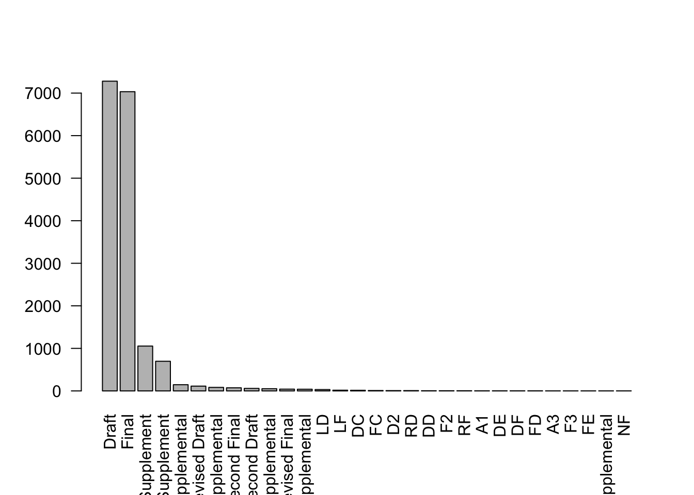
It’s not the prettiest plot, and some of the labels get cut off, but with one line of code we can see that almost all of the filings are plain drafts or finals.
Let’s do the same thing for epa_impact, the EPA’s rating
of the environmental impact of each project. Adding
useNA = "ifany" tells table() to count the
NA values too:
table(eis_raw$epa_impact, useNA = "ifany")##
## Environmental Concerns Environmental Objections
## 6709 1026
## Environmentally Unsatisfactory Lack of Objections
## 79 5161
## <NA>
## 3809barplot(table(eis_raw$epa_impact, useNA = "ifany"))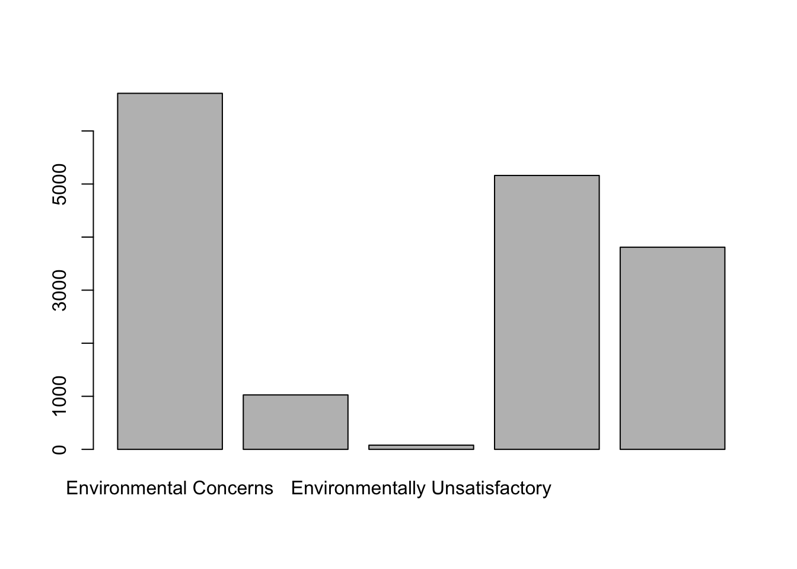
That’s a lot of NA values. Keep that in mind, we’ll come
back to it next week.
For a numeric column like filed_year, we could also make
a table:
table(eis_raw$filed_year)##
## 1987 1988 1989 1990 1991 1992 1993 1994 1995 1996 1997 1998 1999 2000 2001 2002
## 432 433 371 477 457 511 467 530 606 603 498 527 502 474 496 536
## 2003 2004 2005 2006 2007 2008 2009 2010 2011 2012 2013 2014 2015 2016 2017 2018
## 594 598 557 550 563 550 455 497 443 418 398 392 379 331 247 329
## 2019 2020 2021 2022 2023 2024 2025 2026
## 314 261 190 191 181 242 171 13But that’s a lot of numbers to read. A histogram shows the same information as a picture. It splits the values into bins and draws a bar for how many values fall into each bin:
hist(eis_raw$filed_year)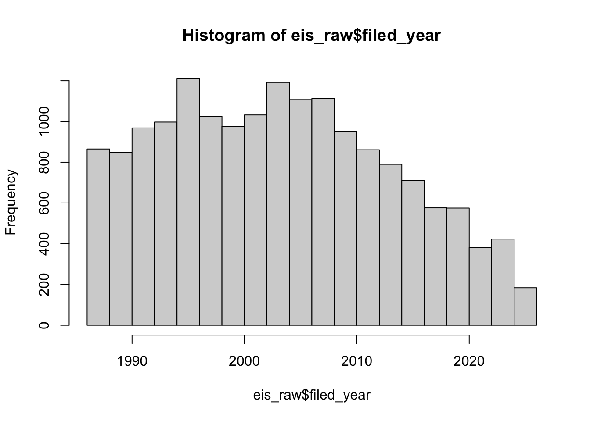
By default R picks the bins for you, but we can set them ourselves
with the breaks argument. Here we make one bin for each
year:
hist(eis_raw$filed_year, breaks = 1986:2026)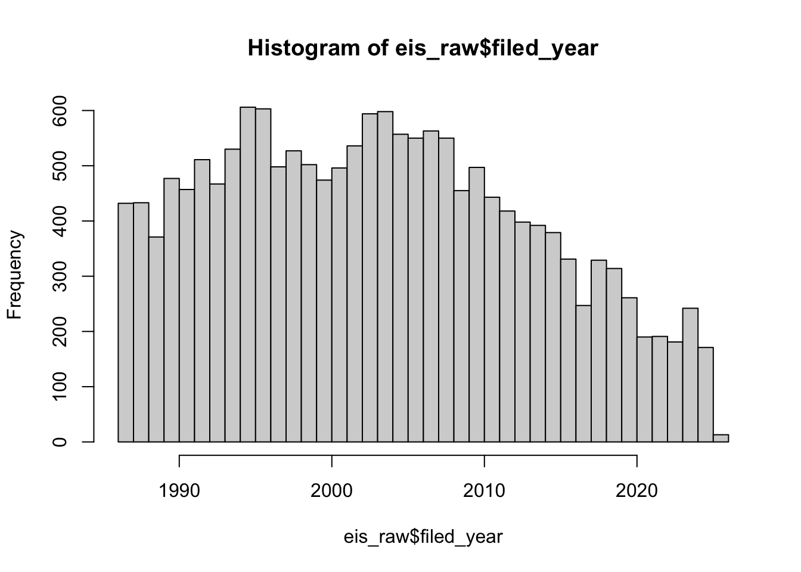
Now we can see that filings peaked in the mid-2000s and have mostly gone down since. The last bar is tiny because the data stop in January 2026, so we only have a few weeks of filings for that year.
Challenge
Make a table and a barplot of
lead_agency. What problem do you run into? What could we do about it?Make a histogram of
attachment_count. What does the distribution look like?
ANSWER
# 1
table(eis_raw$lead_agency)##
## Agriculture Research Service
## 3
## Animal and Plant Health Inspection Service
## 72
## Arizona Department of Transportation
## 2
## Armed Forces Retirement Home
## 2
## Bonneville Power Administration
## 33
## Bureau of Indian Affairs
## 169
## Bureau of Land Management
## 1513
## Bureau of Ocean Energy Management
## 76
## Bureau of Prisons
## 122
## Bureau of Reclamation
## 373
## California Department of Transportation
## 24
## California High-Speed Rail Authority
## 19
## City of New York, Office of Management and Budget
## 2
## Community Development Block Grant
## 30
## Connecticut Department of Housing
## 2
## Defense Logistics Agency
## 1
## Defense Nuclear Agency
## 1
## Denali Commission
## 2
## Department of Agriculture
## 46
## Department of Commerce
## 17
## Department of Defense
## 25
## Department of Energy
## 424
## Department of Health and Human Services
## 8
## Department of Homeland Security
## 15
## Department of Housing and Urban Development
## 57
## Department of Justice
## 36
## Department of State
## 22
## Department of the Interior
## 33
## Department of Transportation
## 9
## Department of Treasury
## 2
## Department of Veteran Affairs
## 37
## Economic Development Administration
## 5
## Energy Regulatory Administration
## 1
## Environmental Protection Agency
## 203
## Farm Service Agency
## 13
## Farmers Home Administration
## 8
## Federal Aviation Administration
## 254
## Federal Emergency Management Agency
## 12
## Federal Energy Regulatory Commission
## 588
## Federal Highway Administration
## 2278
## Federal Railroad Administration
## 81
## Federal Reserve Bank of San Francisco
## 4
## Federal Transit Administration
## 313
## Fish and Wildlife Service
## 427
## Florida Department of Transportation
## 1
## Food and Drug Administration
## 4
## Forest Service
## 3729
## General Services Administration
## 190
## Geological Survey
## 2
## International Boundary and Water Commission
## 14
## Interstate Commerce Commission
## 13
## Los Angeles Housing Community Investment Department
## 4
## Maritime Administration
## 5
## Minerals Management Service
## 91
## Missile Defense Agency
## 4
## National Aeronautics and Space Administration
## 62
## National Capital Planning Commission
## 14
## National Geospatial-Intelligence Agency
## 2
## National Highway Traffic Safety Administration
## 17
## National Indian Gaming Commission
## 3
## National Institute of Health
## 28
## National Marine Fisheries Service
## 105
## National Nuclear Security Administration
## 19
## National Oceanic and Atmospheric Administration
## 526
## National Park Service
## 800
## National Science Foundation
## 23
## National Security Agency
## 8
## Natural Resource Conservation Service
## 85
## New Jersey Department of Environmental Protection
## 2
## New York City Department of Housing Preservation and Development
## 2
## Nuclear Regulatory Commission
## 285
## Office of Surface Mining Reclamation and Enforcement
## 45
## Rural Electrification Administration
## 7
## Rural Utilities Service
## 31
## Soil Conservation Service
## 88
## Surface Transportation Board
## 33
## Tennessee Valley Authority
## 144
## Texas Department of Transportation
## 13
## The Presidio Trust
## 9
## U.S. Army Corps of Engineers
## 1697
## U.S. Coast Guard
## 96
## U.S. Customs and Border Protection
## 2
## United States Air Force
## 347
## United States Army
## 300
## United States Marine Corps
## 31
## United States Navy
## 396
## United States Postal Service
## 8
## Urban Mass Transportation Administration
## 47
## Utah Department of Transportation
## 14
## Washington Department of Fish and Wildlife
## 1
## Western Area Power Administration
## 41barplot(sort(table(eis_raw$lead_agency), decreasing = TRUE), las = 2)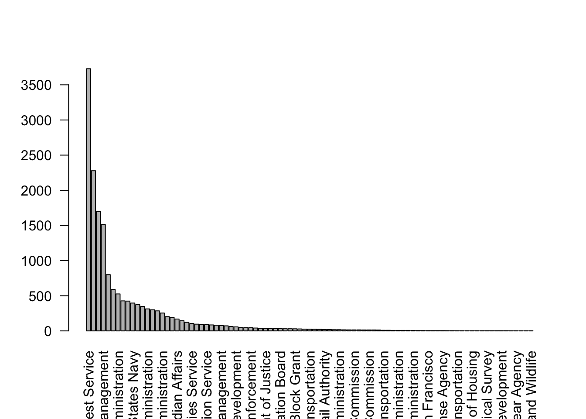
# 2
hist(eis_raw$attachment_count)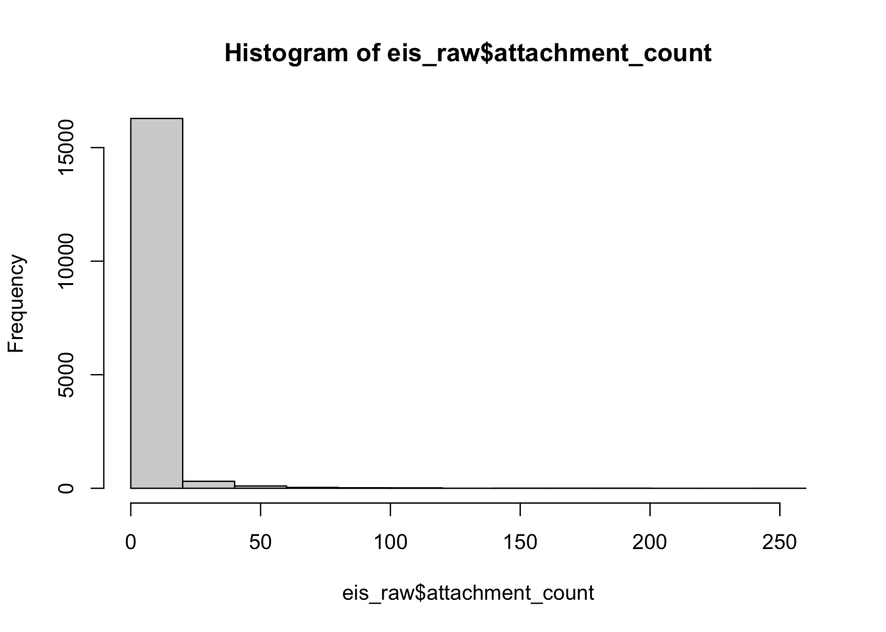
summary(eis_raw$attachment_count)## Min. 1st Qu. Median Mean 3rd Qu. Max.
## 0.000 0.000 1.000 2.723 2.000 253.000There are 92 agencies, which is way too many bars to read. One option is to keep the agencies with the most filings and lump the rest together into an “other” group, which we’ll do next.
Most filings have 0 or 1 attachments, and a few have a lot (up to 253), so the histogram is one tall bar and a long tail to the right.
Getting the data ready to plot
Before we start plotting, we’re going to make a few changes to the data. We’ll do them one step at a time so we can see what each one does.
First, let’s get rid of the 2026 filings, since we only have part of
that year. We’ll save the result as a new object called
eis, so we still have eis_raw if we ever need
to go back:
eis <- eis_raw %>%
filter(filed_year <= 2025)Next, let’s deal with all those document types. For this lesson we
mostly care whether a filing is a draft or a final statement. The
function str_detect(), from the tidyverse package
stringr, checks whether a piece of text
contains a pattern and returns TRUE or
FALSE:
str_detect("Draft Supplement", "Draft")## [1] TRUEstr_detect("Final Supplement", "Draft")## [1] FALSEWe can use it inside case_when(), which you saw in week
5, to make a new stage column. Anything that doesn’t
contain “Draft” or “Final” (those short codes) goes into “Other”:
eis <- eis %>%
mutate(stage = case_when(
str_detect(document_type, "Draft") ~ "Draft",
str_detect(document_type, "Final") ~ "Final",
TRUE ~ "Other"
))
table(eis$stage)##
## Draft Final Other
## 8697 7963 111Now for the agencies. 92 is too many to plot, so we’ll keep the six
agencies with the most filings and lump everyone else into an “Other
agencies” group. First we find the top six. slice_head()
keeps the first six rows, and pull() pulls a column out of
a dataframe as a plain vector:
top_agencies <- eis %>%
count(lead_agency, sort = TRUE) %>%
slice_head(n = 6) %>%
pull(lead_agency)
top_agencies## [1] "Forest Service"
## [2] "Federal Highway Administration"
## [3] "U.S. Army Corps of Engineers"
## [4] "Bureau of Land Management"
## [5] "National Park Service"
## [6] "Federal Energy Regulatory Commission"Then we use if_else() and %in% to make the
new column:
eis <- eis %>%
mutate(agency = if_else(lead_agency %in% top_agencies, lead_agency, "Other agencies"))
table(eis$agency)##
## Bureau of Land Management Federal Energy Regulatory Commission
## 1511 587
## Federal Highway Administration Forest Service
## 2277 3728
## National Park Service Other agencies
## 800 6172
## U.S. Army Corps of Engineers
## 1696R sorts text alphabetically, which doesn’t make much sense for
epa_impact, since the ratings go from best to worst.
Turning the column into a factor lets us set the order of the categories
ourselves, and ggplot will use that order when we plot:
eis <- eis %>%
mutate(epa_impact = factor(epa_impact, levels = c("Lack of Objections",
"Environmental Concerns",
"Environmental Objections",
"Environmentally Unsatisfactory")))
levels(eis$epa_impact)## [1] "Lack of Objections" "Environmental Concerns"
## [3] "Environmental Objections" "Environmentally Unsatisfactory"Our data also has several date columns. When you subtract one date
from another, R gives you the number of days in between. We’ll use that
to make two new numeric columns: comment_days, the number
of days the public had to comment on the statement, and
epa_lag, the number of days it took the EPA to send its
comment letter after the statement was filed:
eis <- eis %>%
mutate(comment_days = as.numeric(comment_due_date - federal_register_date),
epa_lag = as.numeric(comment_letter_date - filed_date))Last, let’s add the region of the country each filing is in. R comes
with a few built-in vectors about U.S. states, including
state.abb (the two-letter abbreviations) and
state.region (the census region). We can put them together
into a little lookup table and join it on, just like we did in week
5:
state_regions <- tibble(state = state.abb, region = as.character(state.region))
eis <- eis %>%
left_join(state_regions, by = "state")
table(eis$region, useNA = "ifany")##
## North Central Northeast South West <NA>
## 1602 1180 3276 9032 1681Filings without a state, or with a code that isn’t one of the 50
states (like PR or DC), get an NA
region.
Checking our new variables
It’s a good idea to look at a new variable before you trust it. Let’s
check comment_days:
summary(eis$comment_days)## Min. 1st Qu. Median Mean 3rd Qu. Max. NAs
## -2891.00 31.00 45.00 46.17 47.00 1949.00 189hist(eis$comment_days)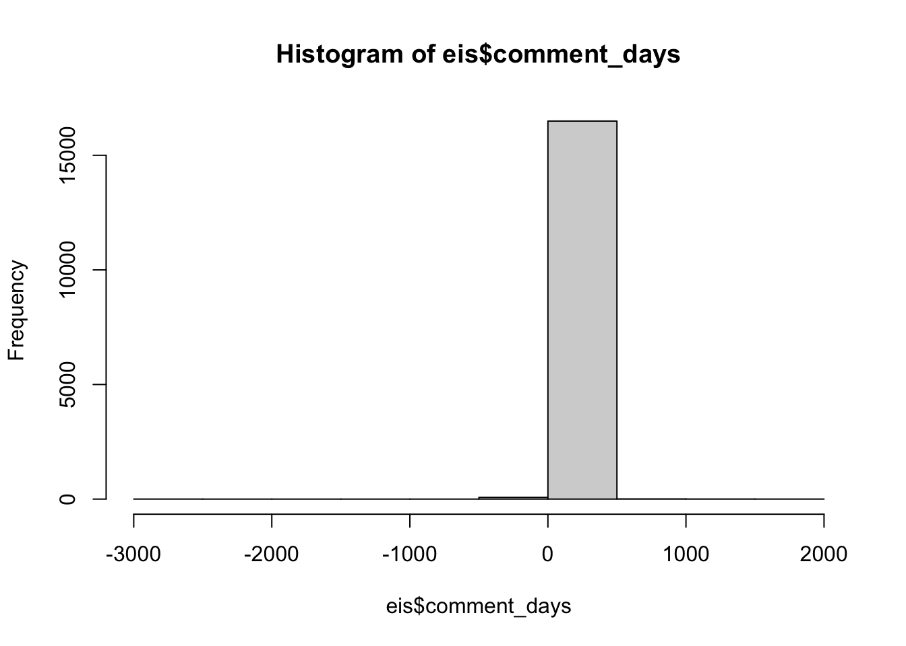
Some of these comment periods are negative, and one is more than five
years long! These are probably data entry errors. Everything is crammed
into one bar, because the bins have to stretch all the way from the
smallest value to the largest. We’ll treat anything below 0 or longer
than a year as missing, and do the same for epa_lag:
eis <- eis %>%
mutate(comment_days = if_else(comment_days >= 0 & comment_days <= 365, comment_days, NA),
epa_lag = if_else(epa_lag >= 0 & epa_lag <= 365, epa_lag, NA))Now let’s try that histogram again, with one bin per day:
hist(eis$comment_days, breaks = 0:365)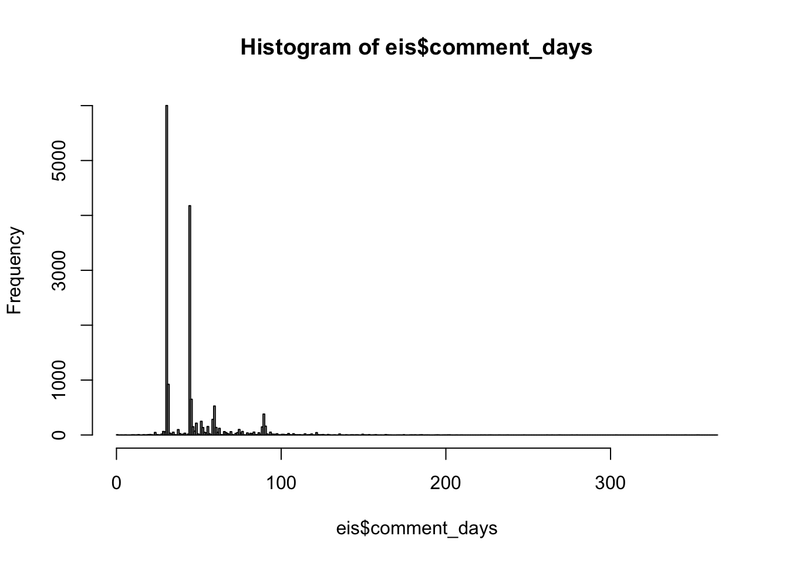
Much better. Most of the comment periods are bunched up at a couple of specific lengths. We’ll figure out why in a bit.
Plotting with ggplot2
ggplot2 is a plotting package that
makes it simple to create complex plots from data in a data frame. It
provides a more programmatic interface for specifying what variables to
plot, how they are displayed, and general visual properties. Therefore,
we only need minimal changes if the underlying data change or if we
decide to change from a bar plot to a scatterplot. This helps in
creating publication quality plots with minimal amounts of adjustments
and tweaking.
ggplot2 functions like data in the
‘long’ format, i.e., a column for every dimension, and a row for every
observation. Well-structured data will save you lots of time when making
figures with ggplot2
ggplot graphics are built step by step by adding new elements. Adding layers in this fashion allows for extensive flexibility and customization of plots.
To build a ggplot, we will use the following basic template that can be used for different types of plots:
ggplot(data = <DATA>, mapping = aes(<MAPPINGS>)) + <GEOM_FUNCTION>()- use the
ggplot()function and bind the plot to a specific data frame using thedataargument
ggplot(data = eis)- define a mapping (using the aesthetic (
aes) function), by selecting the variables to be plotted and specifying how to present them in the graph, e.g. as x/y positions or characteristics such as size, shape, color, etc.
ggplot(data = eis, mapping = aes(x = comment_days))add ‘geoms’ – graphical representations of the data in the plot (points, lines, bars).
ggplot2offers many different geoms; we will use some common ones today, including:* `geom_histogram()` for histograms * `geom_bar()` for bar charts * `geom_point()` for scatter plots, dot plots, etc. * `geom_boxplot()` for, well, boxplots! * `geom_line()` for trend lines, time series, etc.
To add a geom to the plot use the + operator. Because we
have one continuous variable, let’s use geom_histogram()
first:
ggplot(data = eis, mapping = aes(x = comment_days)) +
geom_histogram()## `stat_bin()` using `bins = 30`. Pick better value `binwidth`.## Warning: Removed 282 rows containing non-finite outside the scale range
## (`stat_bin()`).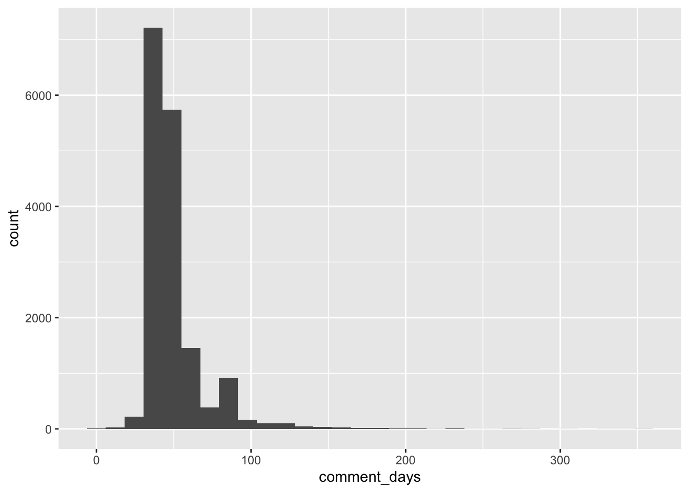
ggplot picked 30 bins for us, and gave us a message about it. Like
with hist(), we can choose the bins ourselves. The
binwidth argument sets how wide each bin is, so
binwidth = 1 gives us one bar per day. Let’s also zoom in
on the first 120 days with xlim():
ggplot(data = eis, mapping = aes(x = comment_days)) +
geom_histogram(binwidth = 1) +
xlim(0, 120)## Warning: Removed 512 rows containing non-finite outside the scale range
## (`stat_bin()`).## Warning: Removed 2 rows containing missing values or values outside the scale range
## (`geom_bar()`).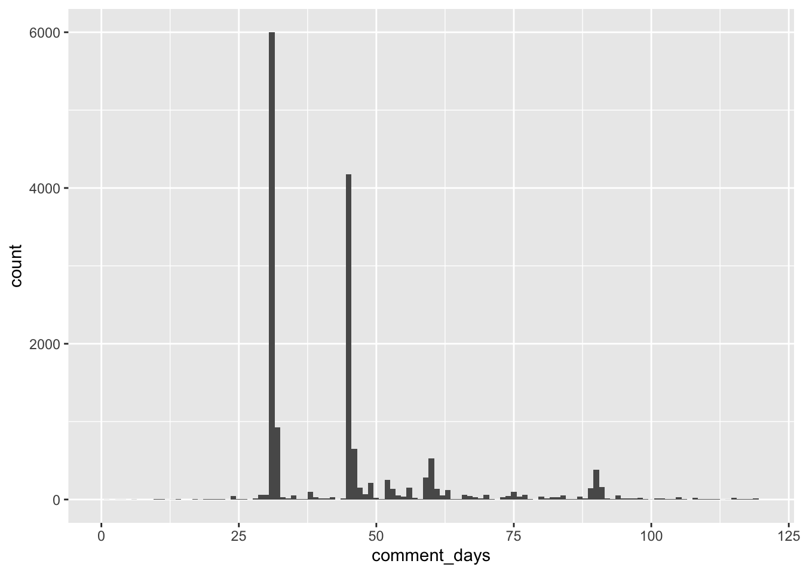
ggplot warns us that it removed some rows. Those are the
NA values, plus anything longer than 120 days. Notice the
two big spikes, one at 31 days and one at 45 days. Keep those in
mind.
The + in the ggplot2
package is particularly useful because it allows you to modify existing
ggplot objects. This means you can easily set up plot
templates and conveniently explore different types of plots, so the
above plot can also be generated with code like this:
# Assign plot to a variable
eis_plot <- ggplot(data = eis,
mapping = aes(x = comment_days))
# Draw the plot
eis_plot +
geom_histogram(binwidth = 1)Notes
- Anything you put in the
ggplot()function can be seen by any geom layers that you add (i.e., these are universal plot settings). This includes the x- and y-axis mapping you set up inaes(). - You can also specify mappings for a given geom independently of the
mappings defined globally in the
ggplot()function. - The
+sign used to add new layers must be placed at the end of the line containing the previous layer. If, instead, the+sign is added at the beginning of the line containing the new layer,ggplot2will not add the new layer and will return an error message.
# This is the correct syntax for adding layers
eis_plot +
geom_histogram()
# This will not add the new layer and will return an error message
eis_plot
+ geom_histogram()Building your plots iteratively
Building plots with ggplot2 is
typically an iterative process. We start by defining the dataset we’ll
use, lay out the axes, and choose a geom. Let’s count up the filings for
each agency with geom_bar():
ggplot(data = eis, mapping = aes(x = agency)) +
geom_bar()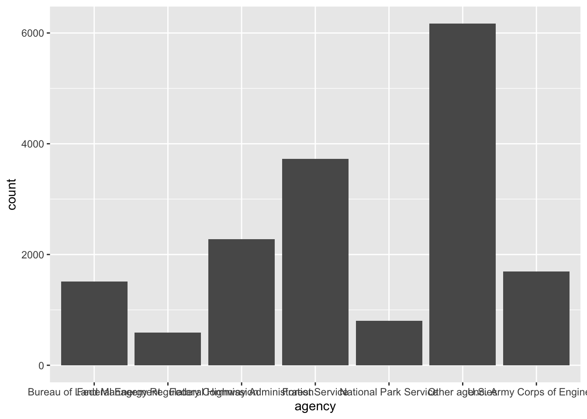
Then, we start modifying this plot to extract more information from
it. For instance, the agency names are so long that they run into each
other. We can fix that by putting agency on the y-axis
instead:
ggplot(data = eis, mapping = aes(y = agency)) +
geom_bar()
We can also add colors for all the bars. For bars, fill
sets the color inside the bar, and color sets the color of
the outline:
ggplot(data = eis, mapping = aes(y = agency)) +
geom_bar(fill = "darkgreen")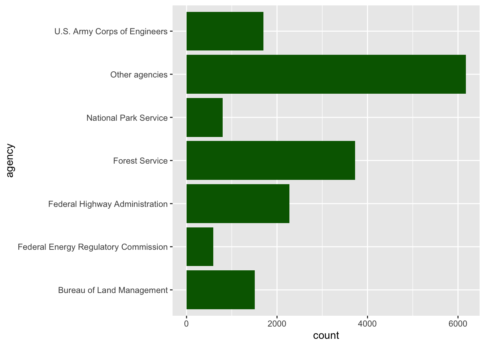
Or to color each stage in the plot differently, you could use a
vector as an input to the argument fill.
ggplot2 will provide a different color
corresponding to different values in the vector. Here is an example
where we fill with stage:
ggplot(data = eis, mapping = aes(y = agency)) +
geom_bar(aes(fill = stage))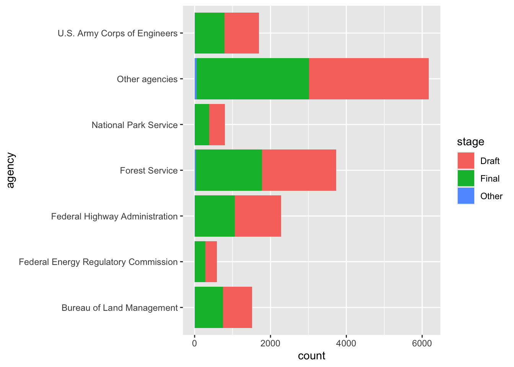
We can also specify the colors directly inside the mapping provided
in the ggplot() function. This will be seen by all geom
layers and the mapping will be determined by the x- and y-axis set up in
aes().
ggplot(data = eis, mapping = aes(y = agency, fill = stage)) +
geom_bar()
Notice that we can change the geom layer and colors will be still
determined by stage. For example, we can
tell geom_bar() to put the bars for each stage side by side
instead of stacking them:
ggplot(data = eis, mapping = aes(y = agency, fill = stage)) +
geom_bar(position = "dodge")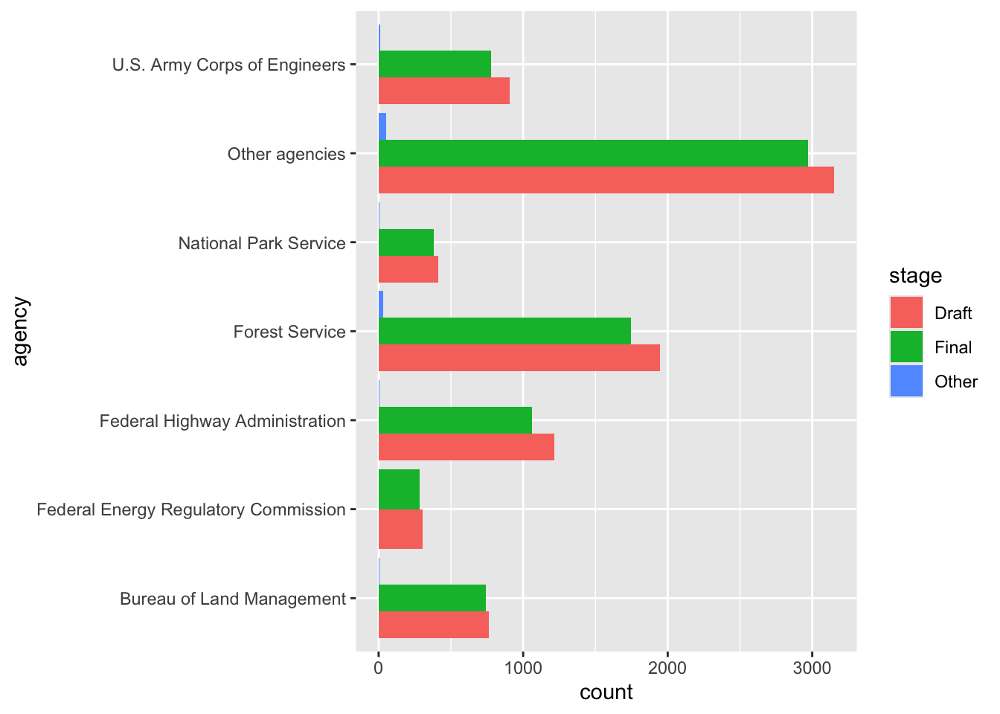
Counting with geom_bar() and
geom_col()
geom_bar() counts the rows in each group for us, so we
only have to give it one variable. Let’s try it with a couple of other
columns. Here’s the EPA’s impact rating:
ggplot(data = eis, mapping = aes(x = epa_impact)) +
geom_bar()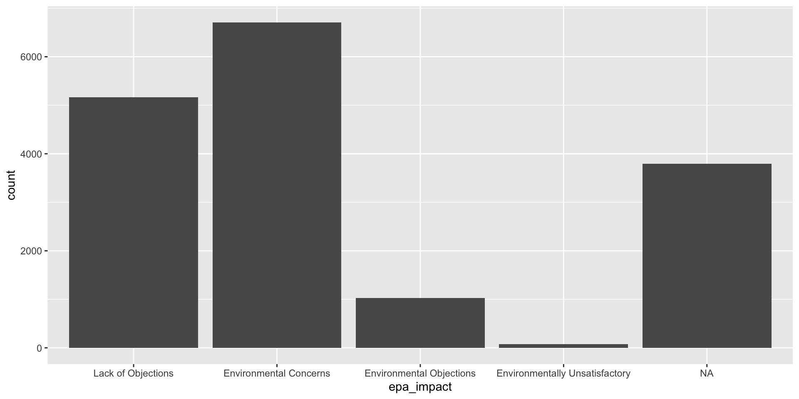
The ratings show up in the order we set when we made
epa_impact a factor, not alphabetically. There’s that big
NA bar again. We can fill by stage to see what kind of
filings got rated:
ggplot(data = eis, mapping = aes(x = epa_impact, fill = stage)) +
geom_bar()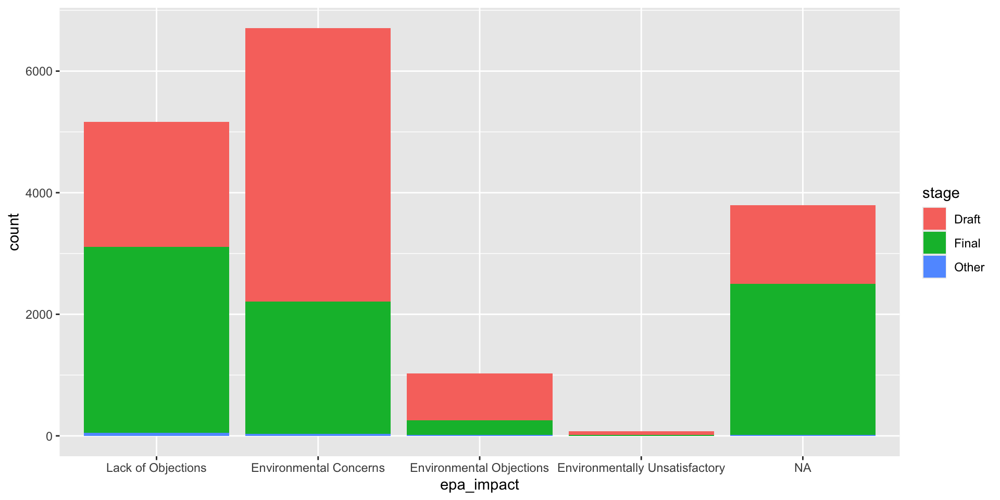
And here’s the number of filings in each region:
ggplot(data = eis, mapping = aes(x = region)) +
geom_bar()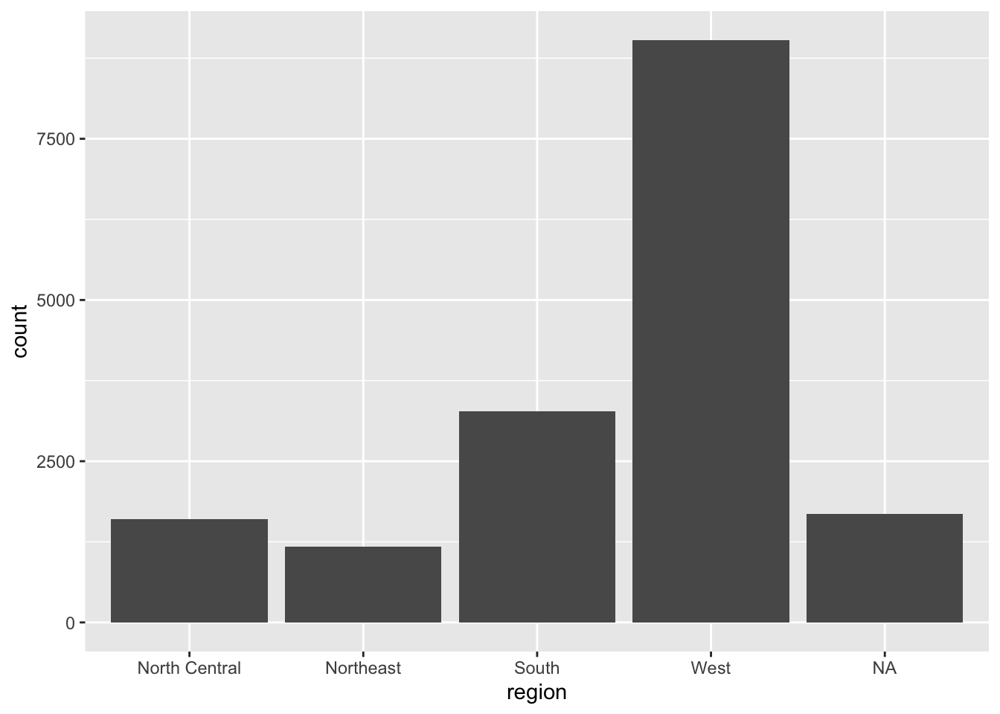
Sometimes we’ve already counted things ourselves, like with
count(). In that case we use geom_col()
instead, and give it the counts as one of the variables:
state_counts <- eis %>%
filter(!is.na(region)) %>%
count(state, region)There are 50 states, so we’ll put them on the y-axis like we did with the agencies:
ggplot(data = state_counts, mapping = aes(x = n, y = state, fill = region)) +
geom_col()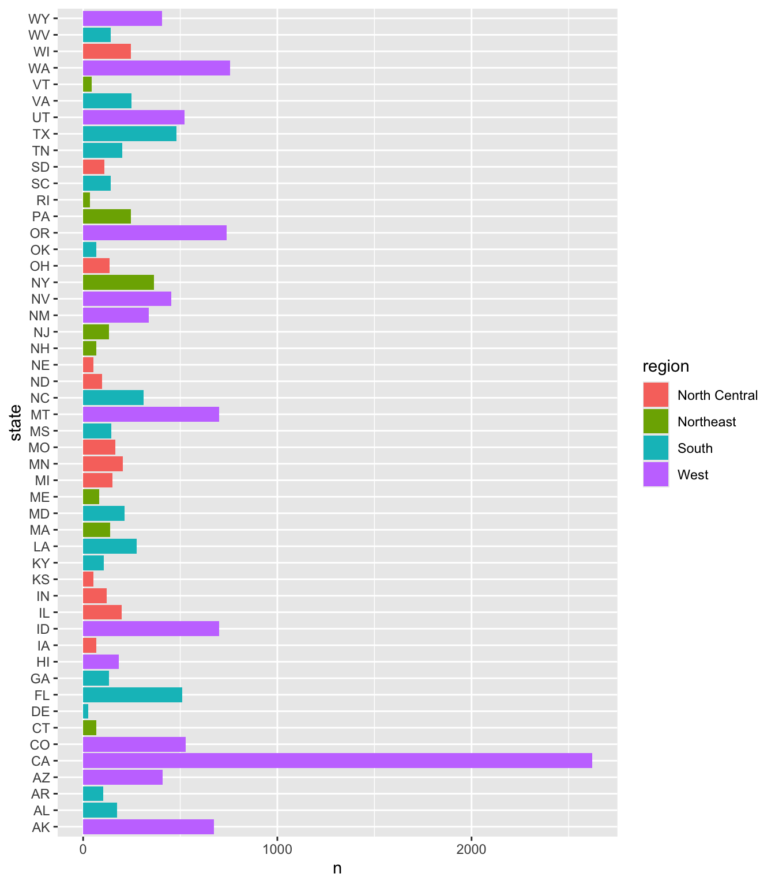
California has the most filings by far, and the western states in general have a lot more than the rest of the country.
Challenge
Use ggplot() to create a scatter plot of
epa_lag and epa_impact with
epa_lag on the Y-axis, and epa_impact on the
X-axis. Have the colors be coded by stage. Is this a good
way to show this type of data? What might be a better graph?
ANSWER
ggplot(data = eis, mapping = aes(x = epa_impact, y = epa_lag)) +
geom_point(aes(color = stage))## Warning: Removed 1377 rows containing missing values or values outside the scale range
## (`geom_point()`).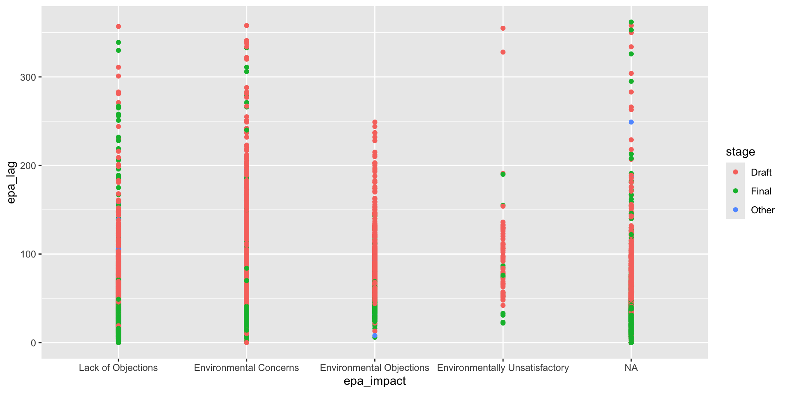
Boxplot
We can use boxplots to visualize the distribution of
epa_lag within each impact rating. We’ll stick to the draft
statements that the EPA actually rated:
drafts_rated <- eis %>%
filter(stage == "Draft", !is.na(epa_impact), !is.na(epa_lag))ggplot(data = drafts_rated, mapping = aes(x = epa_impact, y = epa_lag)) +
geom_boxplot()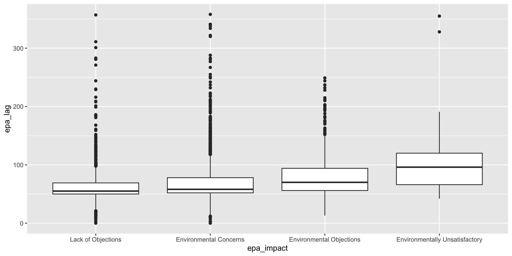
The worse the rating, the longer the EPA tends to take to send its comment letter.
By adding points to boxplot, we can have a better idea of the number of measurements and of their distribution.
Let’s also use the geometry “jitter”. geom_jitter is
almost like geom_point but it allows you to visualize the
density of points because it adds a small amount of random variation to
the location of each point.
ggplot(data = drafts_rated, mapping = aes(x = epa_impact, y = epa_lag)) +
geom_boxplot(alpha = 0) +
geom_jitter(alpha = 0.3, color = "tomato") #notice our color needs to be in quotations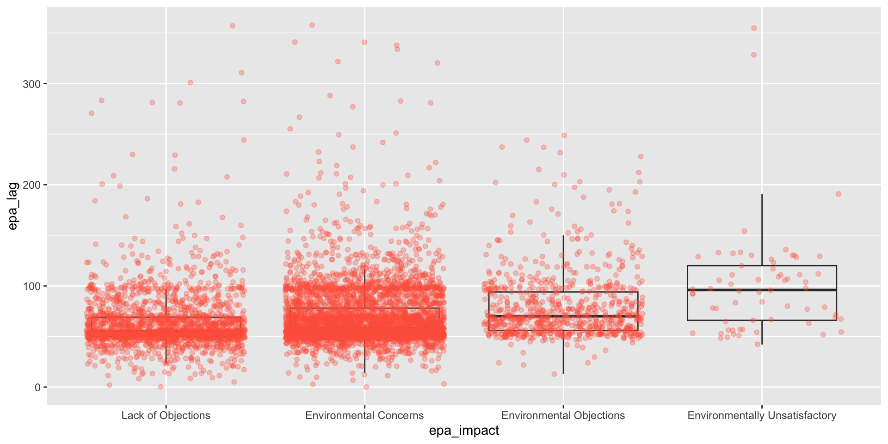
Notice how the boxplot layer is behind the jitter layer? What do you need to change in the code to put the boxplot in front of the points such that it’s not hidden?
Challenges
- Boxplots are useful summaries, but hide the shape of the distribution. For example, if the distribution is bimodal, we would not see it in a boxplot. An alternative to the boxplot is the violin plot, where the shape (of the density of points) is drawn.
- Replace the box plot code from above with a violin plot; see
geom_violin().
- In many types of data, it is important to consider the scale of the observations. For example, it may be worth changing the scale of the axis to better distribute the observations in the space of the plot. Changing the scale of the axes is done similarly to adding/modifying other components (i.e., by incrementally adding commands). Try making these modifications:
- Use the violin plot you made in Q1 and adjust
epa_lagto be on the log10 scale; seescale_y_log10().
- Make a new plot to explore the distribution of
comment_daysjust for the Forest Service and the Bureau of Land Management usinggeom_boxplot(). Overlay a jitter/scatter plot of the comment periods of the two agencies behind the boxplots. Then, add anaes()argument to color the datapoints (but not the boxplots) according to the stage of the filing. Leave out the “Other” stage.
Hint: Remember the two spikes in our histogram of
comment_days, at 31 and 45 days? Does coloring by stage
help explain them?
ANSWER
#1 + 2
ggplot(data = drafts_rated, mapping = aes(x = epa_impact, y = epa_lag)) +
geom_jitter(alpha = 0.3, color = "tomato") +
geom_violin(alpha = 0) +
scale_y_log10()## Warning in scale_y_log10(): log-10 transformation introduced infinite values.
## log-10 transformation introduced infinite values.## Warning: Removed 2 rows containing non-finite outside the scale range
## (`stat_ydensity()`).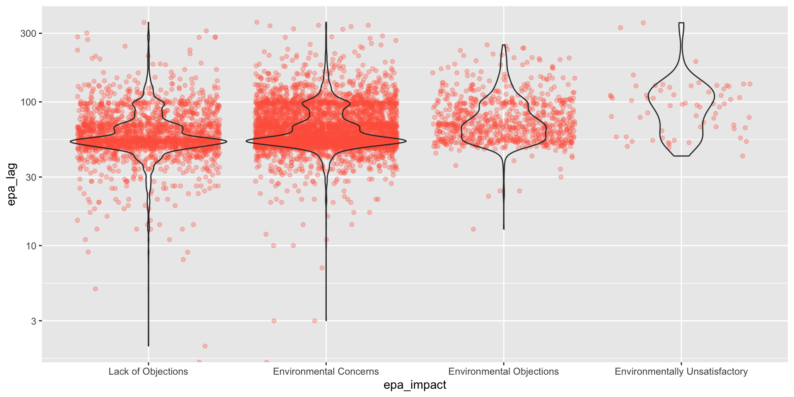
#3
eis %>%
filter(agency == "Forest Service" | agency == "Bureau of Land Management", stage != "Other") %>%
ggplot(mapping = aes(x = agency, y = comment_days)) +
geom_jitter(alpha = 0.3, aes(color = stage)) +
geom_boxplot(alpha = 0)## Warning: Removed 38 rows containing non-finite outside the scale range
## (`stat_boxplot()`).## Warning: Removed 38 rows containing missing values or values outside the scale range
## (`geom_point()`).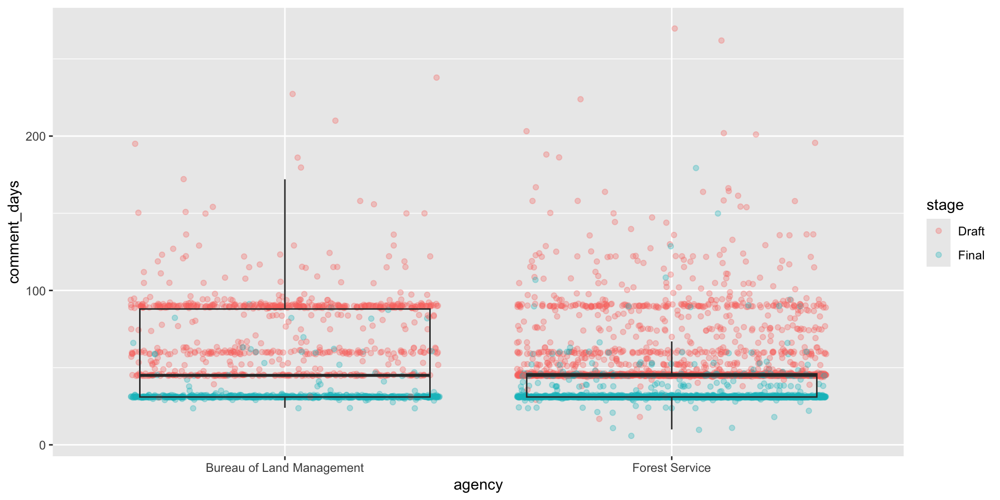
R warns about infinite values in #2 because a few filings have an
epa_lag of 0 days, and the log of 0 is negative
infinity.
In #3, the final statements pile up at around 30 days and the drafts at 45 days or more. The two spikes in the histogram are mostly the two stages.
Plotting time series data
Let’s calculate number of filings per year for each agency. First we
need to group the data and count records within each group. We can
quickly use the dplyr function count to do this.
count is very similar to the function tally we
have seen before, but it internally calls group_by before
the function and ungroup after.
yearly_counts <- eis %>%
count(filed_year, agency)Time series data can be visualized as a line plot with years on the x axis and counts on the y axis:
ggplot(data = yearly_counts, mapping = aes(x = filed_year, y = n)) +
geom_line()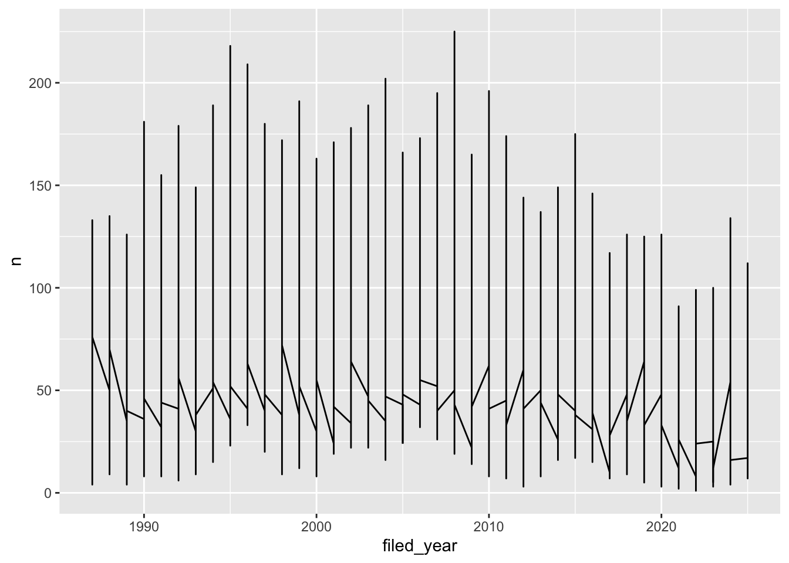
Unfortunately, this does not work because we plotted data for all the
agencies together. We need to tell ggplot to draw a line for each agency
by modifying the aesthetic function to include
group = agency:
ggplot(data = yearly_counts, mapping = aes(x = filed_year, y = n, group = agency)) +
geom_line()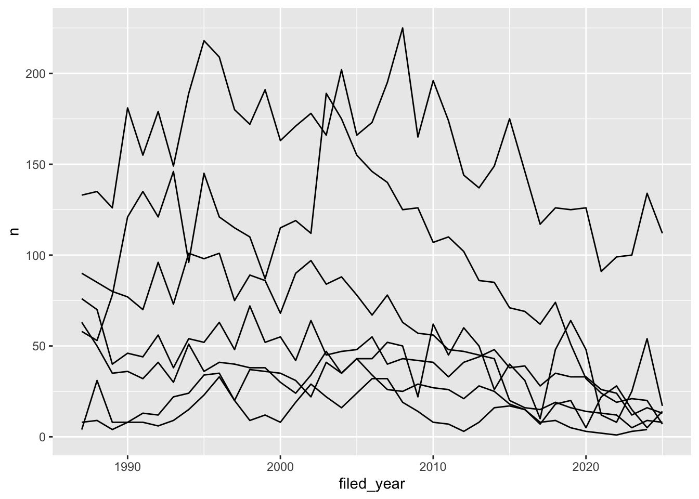
We will be able to distinguish agencies in the plot if we add colors
(using color also automatically groups the data):
ggplot(data = yearly_counts, mapping = aes(x = filed_year, y = n, color = agency)) +
geom_line()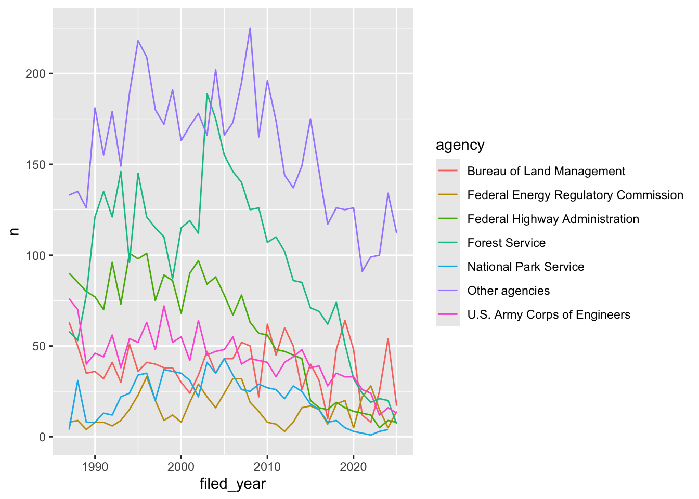
This lesson was contributed by Martha Zillig.
This lesson is adapted from the Data Carpentry: R for Data Analysis and Visualization of Ecological Data Data visualization with ggplot2 materials. Data are from the U.S. EPA’s Environmental Impact Statement database. The course file is a cleaned subset prepared for teaching (see the codebook).